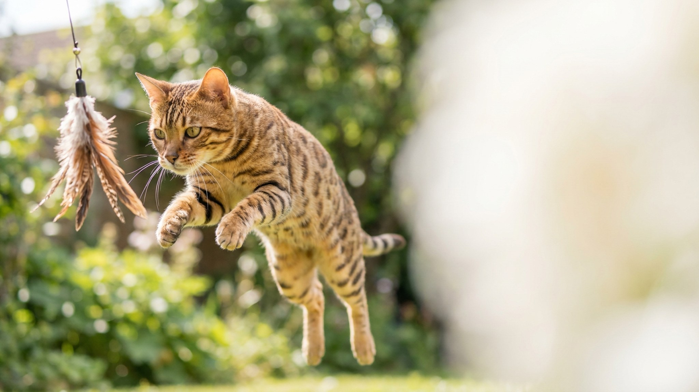

Длинные ноги, огромные уши, вытянутая шея и пятнистая шуба — серенгети выглядит как уменьшенная копия африканского сервала. И тут главный сюрприз: в отличие от саванны, в родословной серенгети нет ни одного дикого предка. Характер у неё полностью домашний — просто очень активный и «собачий». Ниже — откуда взялась эта внешность, кому такая кошка подойдёт и что важно знать про быт с ней.
🐾 Дневник здоровья питомца — в кармане
Вес, прививки, симптомы и напоминания в одном приложении. AnimaLife следит за здоровьем питомца вместо вас.
Серенгети вывели в США в 1990-х: заводчик хотел получить кошку, похожую на сервала, но без скрещивания с дикими животными. В основе — бенгальская и ориентальная породы. От бенгала серенгети достался пятнистый рисунок и крепкое тело, от ориентала — длинные ноги, стройность и огромные уши.
Результат обманчив: перед вами кошка с обликом маленького хищника саванны, но по генетике и повадкам — обычная домашняя кошка, только гиперактивная и любопытная. Это важно понимать заранее: «дикого» ухода или особого содержания порода не требует.
Серенгети — одна из самых «собачьих» пород по темпераменту:
Это кошка для тех, кто готов взаимодействовать. В доме, где целыми днями никого нет и нечем заняться, серенгети начинает искать приключения сама — и находит их на ваших полках.
Энергию такой кошки закрывает не корм, а движение и задачи. Что стоит обустроить: высокий комплекс с полками и «маршрутом» под потолком, устойчивые когтеточки, игрушки-головоломки и кормушки-охоты. Обязательны активные игры-«охоты» с удочкой по 10–15 минут пару раз в день — это выпускает пар и укрепляет связь с хозяином.
Серенгети хорошо уживается с другой активной кошкой или дружелюбной собакой — компаньон спасает от скуки, пока вы на работе. А вот тихому пожилому питомцу такой сосед может быть в тягость.
Шерсть у серенгети короткая и плотно прилегающая — уход элементарный: вычёсывать раз в неделю резиновой щёткой достаточно, чтобы собрать выпавшие волоски. Купание по мере необходимости. Как у любой кошки — чистая вода, качественный рацион по возрасту, свежий лоток и плановые визиты к ветеринару.
И развенчаем миф: пятнистая «дикая» шуба не делает породу гипоаллергенной — полностью гипоаллергенных кошек не существует. Главный ресурс, которого потребует серенгети, — не расчёска, а ваше время и внимание.
🐾 Не уверены, что это опасно?
Опишите симптом в AnimaLife — AI-ветеринар за минуту подскажет, что в пределах нормы, а когда пора к врачу.
🐾 Понравился разбор?
Подпишитесь на канал — каждый день разбираем по одному тревожному симптому у кошек и собак: что в пределах нормы, а когда пора к врачу. Подпишитесь, чтобы не пропустить разбор, который может спасти здоровье вашего питомца.
Материал носит информационный характер и не заменяет очную консультацию ветеринара.